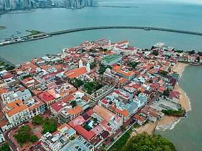
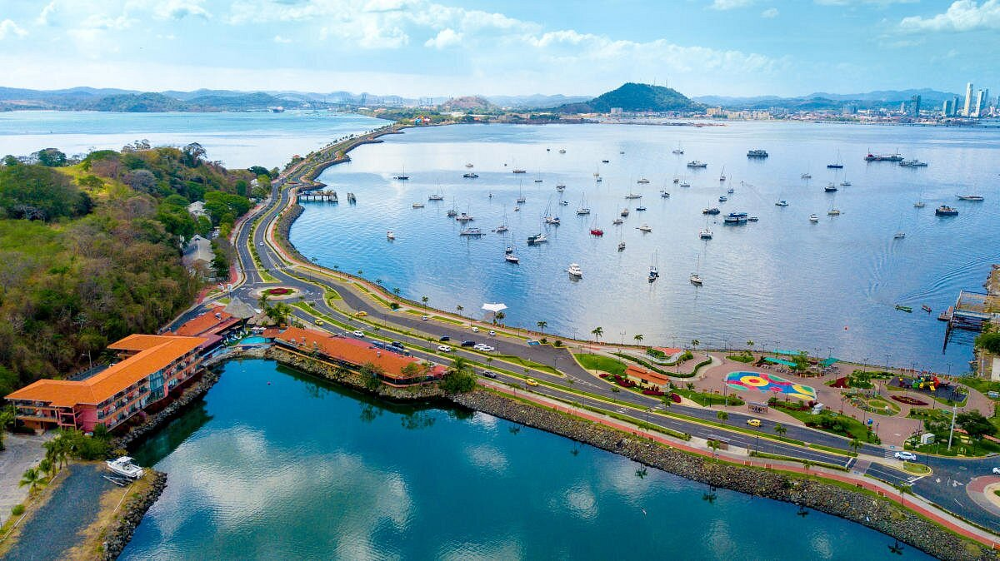
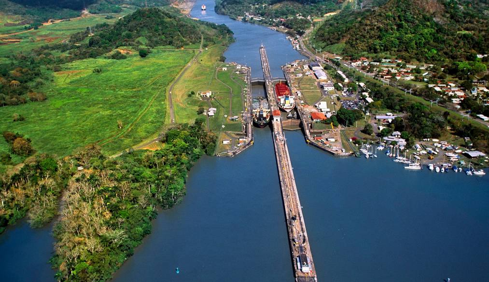
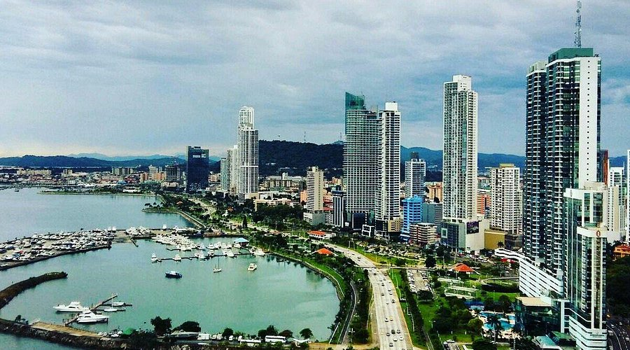
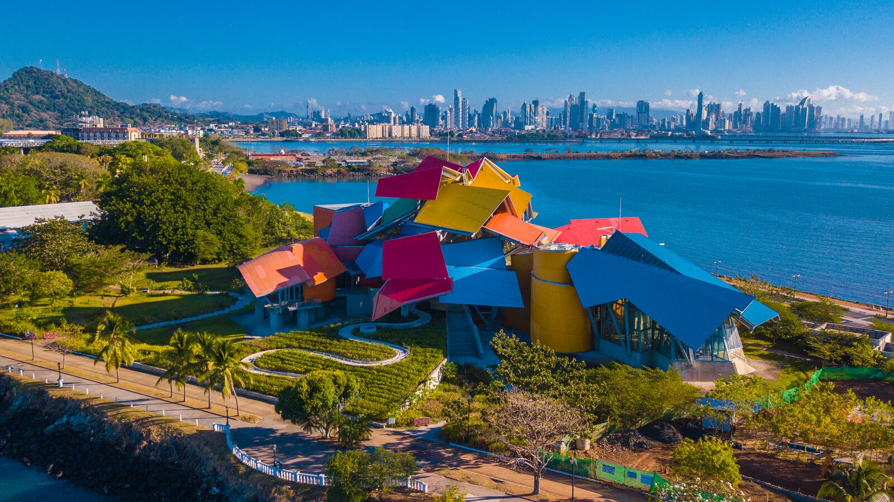
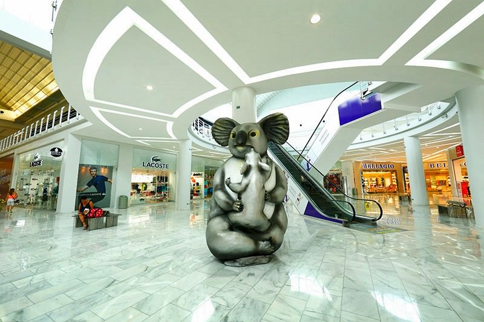
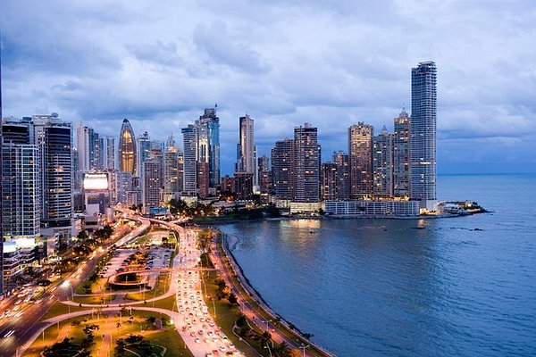

Casco Viejo
הרובע העתיק והמרהיב של פנמה סיטי — רחובות קולוניריים, כיכרות ציוריות, מסעדות מעולות ואווירה קסומה שמחזירה בזמן.

Amador Causeway
טיילת מרהיבה לאורך הים עם נופים לעבר קו הרקיע של העיר והכניסה לתעלת פנמה. מושלם להליכה, אופניים וצילומים.

תעלת פנמה – Miraflores
אחד מפלאי ההנדסה הגדולים בעולם. מרכז המבקרים מציע תצפית על הספינות שחוצות בין האוקיינוסים.

Cinta Costera
רצועת חוף מודרנית עם פארקים, שבילי הליכה וריצה, ונוף מושלם של קו הרקיע. מקום מושלם לשקיעה.

Biomuseo
מוזיאון צבעוני ומרשים שתוכנן על ידי פרנק גרי, המציג את הטבע העשיר של פנמה ואת חשיבותה האקולוגית.

Punta Culebra
מרכז טבע ימי על אי קטן, עם בעלי חיים, בריכות מגע ונופים מרהיבים של האוקיינוס.

Metropolitan Natural Park
ג'ונגל אמיתי בתוך העיר. שבילי הליכה, קופים, ציפורים ונקודות תצפית מדהימות על פנמה סיטי.

Albrook Mall
אחד הקניונים הגדולים באמריקה הלטינית — קניות, אוכל, אטרקציות וכל מה שצריך ליום כיף.

קו הרקיע של פנמה סיטי
גורדי שחקים מרהיבים, אורות נוצצים ונוף שמרגיש כמו שילוב בין מיאמי ודובאי — חובה לכל מי שמגיע לעיר.